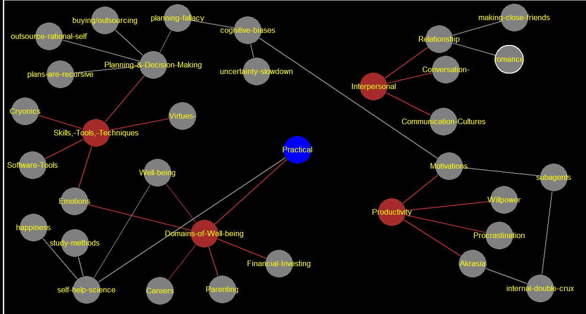

romance
https://www.lesswrong.com/posts/AvjbBjAAbKBk73v5F/relationship-advice-repository written by Ruby repository of relationship advice (focused on romance, though applicable in general)
making-close-friends
https://www.lesswrong.com/posts/pfibDHFZ3waBo6pAc/intentionally-making-close-friends by neel nanda
subagents
https://www.lesswrong.com/tag/subagents "different parts of you want different things" sequence about subagents (by Kaj_Sotala) https://www.lesswrong.com/s/ZbmRyDN8TCpBTZSip [[internal-double-crux-->internal-double-crux]]
internal-double-crux
https://drive.google.com/file/d/1UZYBtOJ3QZ7FTI_4eKjVzBSNUqC_Uba3/view "by Duncan Sabien" <-- in the opening to the book from the CFAR participant handbook, page 91 and page 144 crux in short: "look for common ground instead of trying to figure out who is right" double crux in short: "find common ground between disagreeing sub-agents" person a: "lets explore space" person b: "nah bro" solution: - assume this is a clash of *models*, rather than a clash of *outputs* - use good faith principle - the victory condition is not complete resolution of the argument, but rather, finding agreement on a *shared model of the world* - steps: - operationalize the disagreement ("i believe x because of y") - find "double crux", aka common ground - resonate, "id agree with you if x were true" The double crux perspective claims that the “space or not space” question isn’t particularly interesting, and that a better target for the conversation might be something like “what would we have to know about the universe to confidently answer the ’space or not space’ question?” In other words, rather than seeing the disagreement as a clash of outputs, double crux encourages us to see it as a clash of models.
happiness
happiness - dont correlate much - age, gender, parenthood, iq, attractiveness, money - moderately correlate - health, social activity, religiosity - strongly correlate - genetics, love and relationship satisfaction, work satisfaction
study-methods
study methods: - organize information for clarity - cramming doesnt work - set up schedule for studying - test yourself - spaced repetition (use Anki) - for retention: - acrostics: each first letter of a sentence forms a word youre trying to remember - "method of loci": mind palace - link method: "turning information into vivid images, then linking those images together"
self-help-science
https://www.lesswrong.com/posts/33KewgYhNSxFpbpXg/scientific-self-help-the-state-of-our-knowledge written by lukeprog [[happiness-->happiness]] [[productivity-->Practical]] [[study-methods-->study-methods]]
Practical
https://www.lesswrong.com/posts/bx3gkHJehRCYZAF3r/pain-is-not-the-unit-of-effort written by alkjash central idea: how much youre suffering is not necessarily a good indicator of how much effort youre putting in anecdotes: - mom thought if hes happy hes not trying his best and not tired - abusive sports coach - overachievers antidotes: - if it hurts, you're probably doing it wrong - if youre not happy, youre not doing your best (because happiness is very useful)
plans-are-recursive
https://www.lesswrong.com/posts/xrrycug4DWSdqBhjQ/plans-are-recursive-and-why-this-is-important by "resursive" she means, plans are made of parts, which are also made of parts, etc. (she actually gets into why she uses this fancy word) her reasons for writing this: - Crucial principles of good planning are readily derived from a recursive model of planning. Having a solid grasp of the recursive models makes it harder to forget these key principles. - An explicit treatment of a topic can help it sink in deeper to intuition even if one already has some sense of it. - Even if everyone has an intuitive sense of something, it can be hard to talk about the thing if there isn’t a common explicit handle. "doubly recursive because you must choose the plan, but also the execution, which are both recursive" (i dont fully follow but its fine) implications of the recursive nature - (almost) all plans are sub-plans, and (almost) all goals are sub-goals. - "Goals/Steps/Actions/Plans are Isomorphic" (meaning, basically the same) - you should consider the higher goal of a goal, "what upper goal is this goal a step within?" other points: - long term planning has slow feedback - long term planning is influenced by short term factions such as emotions - success of low level goal can only be determined in terms of how it helps with a higher level goal. (so if the sub goal is bad, it is meaningless even if you crush it) personal note: this convinced me that maybe i shouldnt regard an article so dismissively when the ideas seem obvious or trivial or not mindblowing-and-earth-shattering. just putting things concretely and thinking about them can let them sink in more deeply.
outsource-rational-self
uncertainty-slowdown
https://www.lesswrong.com/posts/FMkQtPvzsriQAow5q/the-correct-response-to-uncertainty-is-not-half-speed problem: - we want to slow down when were uncertain - we half-ass things if were uncertain solution: commit personal take: ok but why write a whole article? also this is kinda obvious.
cognitive-biases
[[planning-fallacy-->planning-fallacy]] [[uncertainty-slowdown-->uncertainty-slowdown]]
planning-fallacy
https://www.lesswrong.com/posts/CPm5LTwHrvBJCa9h5/planning-fallacy problem: "The planning fallacy is that people think they can plan, ha ha." solution: in short: look at similar projects, dont think about the details in long: "So there is a fairly reliable way to fix the planning fallacy, if you’re doing something broadly similar to a reference class of previous projects. Just ask how long similar projects have taken in the past, without considering any of the special properties of this project. Better yet, ask an experienced outsider how long similar projects have taken."
buying/outsourcing
https://www.lesswrong.com/posts/tTWL6rkfEuQN9ivxj/leaky-delegation-you-are-not-a-commodity Cheatsheet: 10 Questions to Ask Before Delegating or Buying Are there aspects that I don't care about but providers take great pains to provide? Do I believe that my preferred set of tradeoffs differs substantially from the median? Do I have reason to believe I'll be savvier than the average consumer of this product or service? In particular, is there catastrophic risk associated with this offering, and do I have reason to believe I am much less susceptible than average? Do providers have access to some kind of specialized capital or technology for which I lack good substitutes? Do providers have substantial overhead that I would not? This includes regulatory burden and security. How much of the cost is spent on signaling quality? Do I hope to have a lot of repeat business with the same provider? How much of the price is spent on transaction costs? How do I know whether and when the special expertise claimed by the provider is beneficial? How much do I value the learning from doing it myself? Do I expect to use the knowledge gained? Is the learning involved overly specialized? Are there other ways in which the thing to be bought is substantially different from what I'd do for myself?
Domains-of-Well-being
[[Emotions-->Emotions]] (133) [[Financial-Investing-->Financial-Investing]] (124) [[Parenting-->Parenting]] (122) [[Careers-->Careers]] (115) [[Well-being-->Well-being]] (101) [[pain-is-not-effort-->Practical]]
Skills,-Tools,-Techniques
[[Emotions-->Emotions]] (133) [[Software-Tools-->Software-Tools]] (120) [[Cryonics-->Cryonics]] (118) [[Virtues--->Virtues-]] (95) [[Planning-&-Decision-Making-->Planning-&-Decision-Making]] (89)
Productivity
[[Productivity-->Productivity]] (166) [[Motivations-->Motivations]] (160) [[Akrasia-->Akrasia]] (76) [[Procrastination-->Procrastination]] (33) [[Willpower-->Willpower]] (30)
Interpersonal
[[Relationship-->Relationship]] (142) [[Conversation--->Conversation-]] (109) [[Communication-Cultures-->Communication-Cultures]] (83) [[Circling-->Circling]] (8)
Emotions
https://www.lesswrong.com/tag/emotions "Contrary to the stereotype, rationality doesn't mean denying emotion. When emotion is appropriate to the reality of the situation, it should be embraced; only when emotion isn't appropriate should it be suppressed." i got no good links
Financial-Investing
https://www.lesswrong.com/tag/financial-investing i dont care
Parenting
https://www.lesswrong.com/tag/parenting i dont care
Careers
https://www.lesswrong.com/tag/careers i dont care
Well-being
https://www.lesswrong.com/tag/well-being is sleep important? https://www.lesswrong.com/posts/sbcmACvB6DqYXYidL/counter-theses-on-sleep Natália Coelho Mendonça [[self-help-science-->self-help-science]]
Software-Tools
https://www.lesswrong.com/tag/software-tools if you go to the page, youll find a bunch of software
Cryonics
yes, freezing people... https://www.lesswrong.com/tag/cryonics
Virtues-
https://www.lesswrong.com/tag/virtues https://www.lesswrong.com/posts/7ZqGiPHTpiDMwqMN2/twelve-virtues-of-rationality the 12 ~~commandments~~ virtues of rationality Curiosity - the burning desire to pursue truth; Relinquishment - not being attached to mistaken beliefs; Lightness - updating your beliefs with ease; Evenness - not privileging particular hypotheses in the pursuit of truth; Argument - the will to let one's beliefs be challenged; Empiricism - grounding oneself in observation and prediction; Simplicity - elimination of unnecessary detail in modeling the world; Humility - recognition of one's fallibility; Perfectionism - seeking perfection even if it's not attainable; Precision - seeking narrower statements and not overcorrect; Scholarship - the study of multiple domains and perspectives; The nameless virtue - seeking truth and not the virtues for themselves.
Planning-&-Decision-Making
[[buying/outsourcing-->buying/outsourcing]] [[planning-fallacy-->planning-fallacy]] [[plans-are-recursive-->plans-are-recursive]] [[outsource-rational-self-->outsource-rational-self]]
Motivations
https://www.lesswrong.com/tag/motivations article WIP, no links yet utility functions elephant in the brain "stated vs actual motivation" [[subagents-->subagents]] propagating urges Habitual Productivity and Nate's Writing Something to Protect [[cognitive-biases-->cognitive-biases]]: - motivated reasoning - confirmation bias - rationalization
Akrasia
https://www.lesswrong.com/tag/akrasia Akrasia is the state of acting against one's better judgment. A canonical example is procrastination. tools such as Internal Double Crux to resolve internal mental conflicts [[internal-double-crux-->internal-double-crux]]
Procrastination
https://www.lesswrong.com/tag/procrastination "algorithm for beating procrastination" by lukeprog https://www.lesswrong.com/posts/Ty2tjPwv8uyPK9vrz/my-algorithm-for-beating-procrastination "Working hurts less than procrastinating, we fear the twinge of starting" by yudkowsky https://www.lesswrong.com/posts/9o3QBg2xJXcRCxGjS/working-hurts-less-than-procrastinating-we-fear-the-twinge "how to beat procrastination" by lukeprog https://www.lesswrong.com/posts/RWo4LwFzpHNQCTcYt/how-to-beat-procrastination
Willpower
https://www.lesswrong.com/tag/willpower
Relationship
https://www.lesswrong.com/tag/relationships-interpersonal [[romance-->romance]] [[making-close-friends-->making-close-friends]]
Conversation-
https://www.lesswrong.com/posts/RWo4LwFzpHNQCTcYt/how-to-beat-procrastination WIP, "how to have good conversations"
Communication-Cultures
Ask vs Guess (and Tell/Reveal); Wait vs Interrupt; Combat vs Nurture.
css [stylesheet]